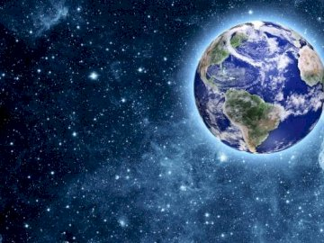

- El agua es una de las sustancias más abundantes del planeta, cubre de hecho la mayor parte, por lo que es conocido como “planeta azul” (ya que desde el espacio exterior se lo ve azul brillante). En la Tierra, la fracción más grande del agua se encuentra en estado líquido: un 71 % de la superficie terrestre está cubierta por agua líquida, de la cual el 97 % corresponde a agua salada que
forma los océanos. La segunda fracción en importancia es la que se encuentra en estado
sólido, es decir, acumulada como hielo: los glaciares y casquetes polares ubicados principalmente en Groenlandia y Antártida ocupan el 10 % de la superficie del planeta y representan el 69 % del agua dulce disponible. Finalmente, una fracción aún menor de agua se encuentra en estado gaseoso, como vapor de agua, formando parte de la atmosfera: la humedad atmosférica representa solo el 0,001% del total de agua de la Tierra.
- El ciclo del agua se compone de etapas sucesivas y simultáneas, que se repiten sin cesar y se compenetran unas con otras.
- La premisa para que suceda la evaporación en el ciclo hídrico (o lo que es igual, el fenómeno opuesto a la condensación) es que exista calor (energía). Dicha energía es utilizada para romper los enlaces que mantienen a las moléculas de consistencia acuática unidas.
- Cuando la humedad relativa del aire es del 100% (punto de saturación), el H2O no puede continuar evaporándose. El proceso que estamos analizando toma calor del ambiente, razón por la que el agua que es evaporada de la piel durante la transpiración refresca los organismos.
- La evaporación es una parte esencial en este ciclo. La energía del Sol provoca que se evapore el H2O de océanos y lagos, así como la humedad del suelo y otras fuentes acuáticas. Este fenómeno, junto con la transpiración (que alude a la evaporación en el interior de la estoma de la planta), reciben en hidrología el nombre de conjunto de evapotranspiración.
- El agua es extremadamente importante para los seres vivos. Más de la mitad de tu cuerpo es agua y, si analizáramos tus células, ¡encontraríamos que están compuestas por más del 70% de agua! Así que tú, como la mayoría de los animales terrestres, necesitas una fuente confiable de agua dulce para sobrevivir.
- El 97.5% del agua de la Tierra es salada. Más del 99% del agua restante está en depósitos subterráneos o en forma de hielo. Así que menos del 1% del agua dulce se encuentra en lagos, ríos y otras formas superficiales disponibles.
- La mayor parte del agua de la Tierra es el agua salada de los océanos, solo una pequeña fracción es agua dulce de fácil acceso, que es lo que necesitamos los humanos.
- El agua que se encuentra en la superficie de la tierra circula rápidamente, pero mucha del agua del planeta se encuentra en el hielo, los océanos y los depósitos subterráneos, y esta circula lentamente.
- El ciclo del agua es complejo. Involucra cambios en el estado físico del agua, así como el movimiento de esta a través de los ecosistemas y entre ellos.
- El agua subterránea se encuentra entre las partículas del suelo y en las grietas de las rocas. Los mantos acuíferos son depósitos de agua subterránea que a menudo se aprovechan por medio de pozos.
